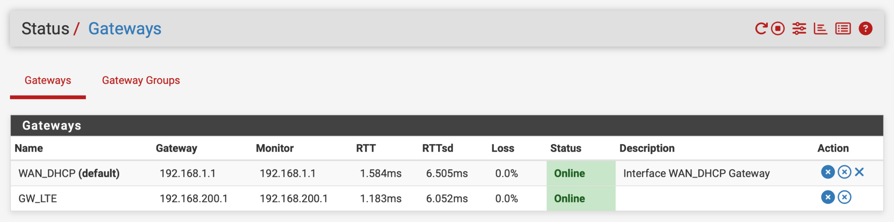
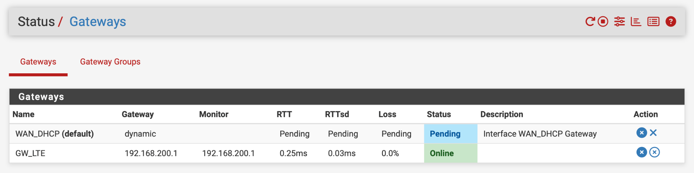
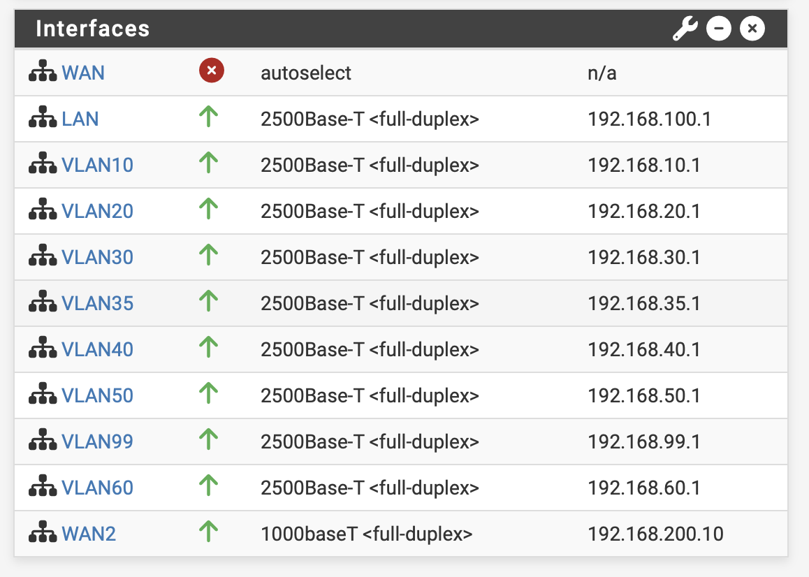

Função da firewall no laboratório
No laboratório, o pfSense funciona como ponto central entre as várias VLANs e as duas ligações WAN. A firewall controla o tráfego entre segmentos internos, aplica regras de acesso e decide por onde sai o tráfego para a internet.
Interfaces principais
- WAN: ligação principal de fibra.
- WAN2: ligação secundária LTE.
- LAN + VLANs: redes internas segmentadas por função, incluindo acesso, servidores, IoT, câmaras, impressoras e gestão.
WAN, gateway e failover: o que significam?
Ligação a uma rede externa, neste caso o acesso principal por fibra.
Segunda ligação externa, neste caso o acesso de reserva através do MikroTik LTE.
Próximo equipamento por onde o tráfego segue para outra rede.
Comutação para uma ligação alternativa quando a principal deixa de estar disponível.
O gateway group e as regras de encaminhamento permitem definir a prioridade entre ligações. As capturas mostram os estados dos gateways e das interfaces; a comutação efetiva do tráfego depende também das regras configuradas.
Fibra e LTE: os dois estados
O objetivo do failover é manter a conectividade dos serviços quando a ligação de fibra deixa de estar disponível. Os dois cenários abaixo seguem a mesma ordem: estado, encaminhamento, notas e capturas do pfSense.
Fibra operacional
Os dois gateways respondem à monitorização; a fibra é a ligação principal e a WAN2/LTE está disponível como alternativa.
Status
Estado observado no painel de gateways.
Routing
Em condições normais, o tráfego de saída utiliza a ligação principal, de acordo com as regras de encaminhamento configuradas.
Notas
O LTE permanece disponível para redundância. As VLANs internas mantêm-se ativas, independentemente da escolha da saída WAN.
Capturas do pfSense
Gateways e interfaces

Fibra indisponível · LTE de reserva
No teste documentado, a interface WAN deixou de ter ligação e o gateway principal surgiu como Pending, enquanto o gateway LTE continuou Online.
Status
A interface WAN surge sem ligação; “Pending” é o estado mostrado na captura, não equivale necessariamente a “Offline”.
Routing
Com o failover configurado, o tráfego de saída passa pela WAN2/LTE quando a ligação principal falha.
Notas
As redes e os serviços locais continuam disponíveis. Serviços que precisam de internet passam a depender da capacidade da ligação móvel, podendo sentir alterações de velocidade ou latência.
Capturas do pfSense
Gateways e interfaces

O que acontece durante a comutação?
- A ligação de fibra deixa de estar disponível e a monitorização do gateway principal deixa de obter as respostas esperadas.
- O pfSense identifica a alteração de estado do gateway principal.
- Com o encaminhamento e as prioridades de failover devidamente configurados, a WAN2/LTE passa a ser a saída para a internet.
- Quando a fibra regressa e o gateway é considerado novamente disponível, o tráfego pode voltar à ligação principal conforme as regras e estados de ligação.
As capturas comprovam o estado das interfaces e gateways nos dois momentos. O caminho efetivo de cada ligação depende das regras de routing e NAT; a disponibilidade do LTE não prova, por si só, que todos os fluxos mudaram de rota.
O que continua a funcionar?
Os serviços e a comunicação local entre as VLANs continuam a depender da infraestrutura interna, e não da fibra.
Com a comutação bem-sucedida, os serviços com tráfego de saída podem utilizar o LTE, dentro das suas limitações.
Pode depender do tipo de acesso utilizado e das limitações do operador móvel; não é garantido para todos os serviços.